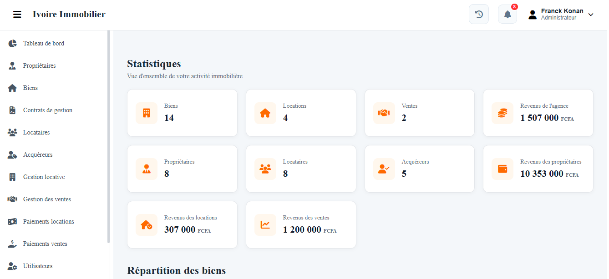

Développement front-end
Créer des interfaces claires, adaptatives et agréables à utiliser.
Bonjour, je suis
Développeur web junior, je transforme des idées et des problématiques concrètes en solutions numériques utiles, structurées et accessibles.
01 / À PROPOS
Je suis un développeur web junior passionné par la création de solutions numériques concrètes.
Mon approche part d’un besoin : comprendre le fonctionnement d’une activité, organiser les informations, puis concevoir un outil qui simplifie le quotidien de ses utilisateurs.
Je travaille principalement avec les technologies du web et je développe mes compétences à travers des projets personnels, de la conception à la mise en œuvre.
02 / COMPÉTENCES
Mon socle technique actuel, mobilisé dans la réalisation de projets web et d’outils de gestion.
Créer des interfaces claires, adaptatives et agréables à utiliser.
Construire la logique applicative et gérer les échanges avec les données.
Organiser le code, tester localement et suivre les évolutions d’un projet.
Structurer et exploiter des données pour faciliter le suivi d’activité.
03 / PROJETS SÉLECTIONNÉS
Quelques projets qui illustrent ma manière d’apprendre, de concevoir et de construire.

CAPTURE RÉELLE · TABLEAU DE BORD IMMOGESTION CIUne application de gestion immobilière conçue pour aider les agences et professionnels de l’immobilier à centraliser leurs opérations.
Projet personnel développé et testé. Commercialisation en préparation.
Voir la démonstration ↗Des outils de gestion sur tableur destinés à aider les petits entrepreneurs à mieux suivre leur activité.
Prototype en cours d’amélioration, notamment sur l’expérience utilisateur.
Un parcours pédagogique pratique pour accompagner les débutants francophones dans la création de leur premier site web.
Prototype pédagogique testé localement avec XAMPP.
Conception et réalisation d’un site vitrine pour présenter l’entreprise, ses domaines d’expertise, ses réalisations et faciliter les demandes de contact et de devis.
Site accessible en ligne : experts12.com.
Visiter le site Experts12 ↗04 / PARCOURS
Un parcours construit autour de la formation, de l’expérimentation et de projets personnels.
Niveau Licence 3 atteint — diplôme non obtenu.
Approfondissement de HTML, CSS, JavaScript, PHP et MySQL à travers la pratique.
Réalisation de projets orientés gestion, outils métier et apprentissage du développement web.
05 / CONTACT
Je suis ouvert aux opportunités professionnelles, aux collaborations et aux échanges autour de projets numériques.